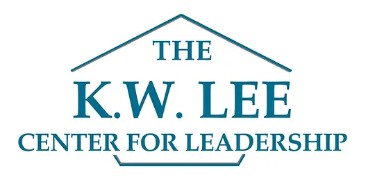

Volunteer Experience
National Honors Society
Secretary , December 2020 - June 2021
Responsible for representing our chapter in public relations and providing accurate, detailed records of every meeting, activities, service projects, and attendance. Utilized numerous productivity applications to properly organize and prepare committee information and news.
High School Leadership
Chair of Service Committee , October 2018 - June 2021
Coordinated with board members and school administration to conduct community-oriented service projects such as our school's first Red Cross Blood Drive and food/hygiene drives. Managed and advised a team of 10 members working on service projects, meeting at least 2 days a week to support and communicate the project status of each member.
K.W. Lee Center's Korean American Youth Leaders in Training Program 
Student Intern , July 2019 - August 2019
Advocated for workers' rights by reaching out and partnering with local organizations to legally conduct direct action movements against businesses committing wage theft. Successfully negotiated improvements in the wages and treatment of workers at GENWA Korean Barbeque after a student-led delegation in the presence of legal representatives.
Nahsung Evangelical Church
Church Youth Group Praise Leader, February 2018 - August 2021
Worked collaboratively with praise team members to organize weekly worship by creating song playlists, powerpoint presentations, and activities. Dedicated time to practice and lead our group every weekend, providing feedback and ideas on how we could improve each week.
My Education
Bachelor of Science in Pharmacological Chemistry
University of California San Diego, La Jolla, CA
Photography Club (FOUNDER/PRESIDENT)
Mental Health Awareness Club (MEMBER)
Girls Build LA (MEMBER)
Yearbook Team (MEMBER)
Dance Team (MEMBER)